SD2-091 · 这只梨像坐着的团团
low · 双角色围绕一只大梨，桌面仅盘、餐布、果篮、杯和花盆，天空草地留白充足。
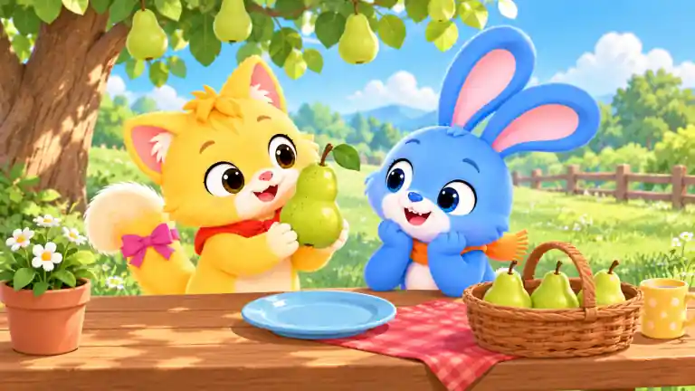
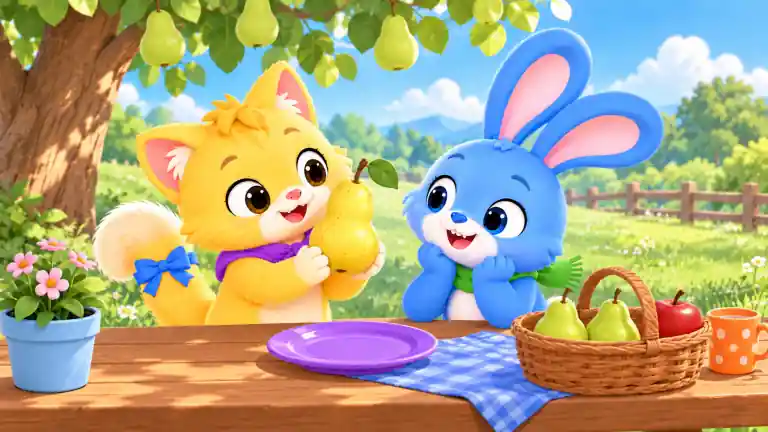
暖暖粉尾结变蓝 · 暖暖红围巾变紫 · 跃跃橙围巾变绿 · 手中绿梨变黄梨 · 浅蓝盘变紫盘 · 红格餐布变蓝格 · 黄杯变橙杯 · 陶土花盆变浅蓝 · 白雏菊变粉花 · 篮中最右绿梨变红苹果
low · 双角色围绕一只大梨，桌面仅盘、餐布、果篮、杯和花盆，天空草地留白充足。


暖暖粉尾结变蓝 · 暖暖红围巾变紫 · 跃跃橙围巾变绿 · 手中绿梨变黄梨 · 浅蓝盘变紫盘 · 红格餐布变蓝格 · 黄杯变橙杯 · 陶土花盆变浅蓝 · 白雏菊变粉花 · 篮中最右绿梨变红苹果
medium · 单角色与中心果盘清楚，果碗、餐具、杯、篮、棚布和果树形成适中信息量。
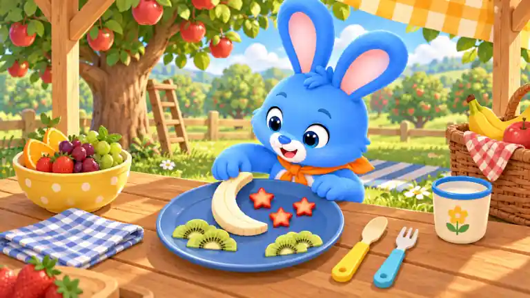
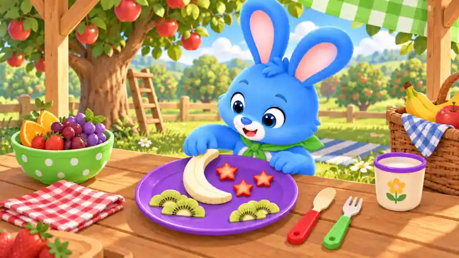
跃跃橙围巾变绿 · 大蓝盘变紫 · 黄圆点果碗变绿 · 碗中绿葡萄变紫 · 蓝格餐巾变红格 · 黄柄圆头餐具变红柄 · 蓝柄叉变绿柄 · 白杯蓝边变紫边 · 篮中红格布变蓝格 · 黄格棚布变绿格
high · 双角色、大果盘、多种果片、五只容器、餐布、夹子、果篮和果园背景形成高密度搜索。
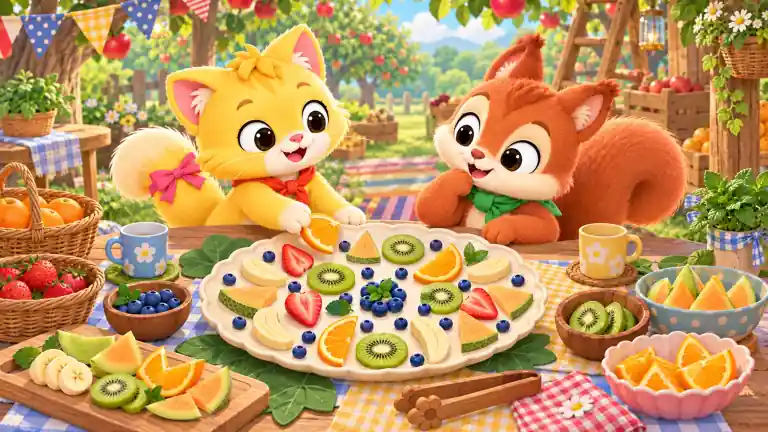
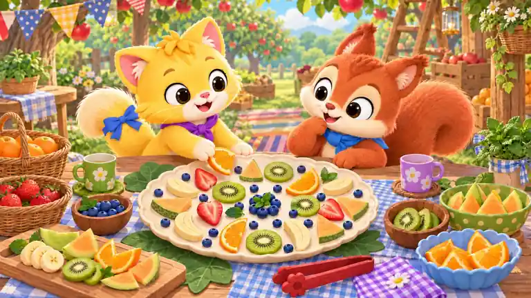
暖暖粉尾结变蓝 · 暖暖红围巾变紫 · 栗栗绿围巾变蓝 · 左侧蓝花杯变绿杯 · 右侧黄花杯变紫杯 · 粉橘瓣碗变蓝碗 · 蓝圆点瓜碗变绿碗 · 红格餐巾变紫格 · 黄格餐巾变蓝格 · 木夹子变红色
low · 双角色、斜坡、苹果篮和软布窝均为大形体，草地天空留白明显。
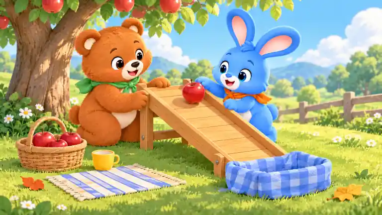
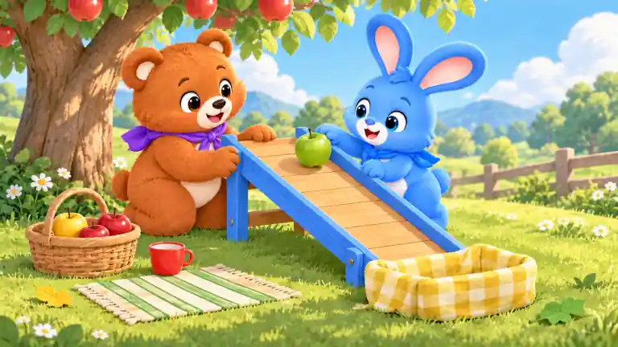
团团绿围巾变紫 · 跃跃橙围巾变蓝 · 坡顶红苹果变绿苹果 · 蓝格软布窝变黄格 · 黄杯变红杯 · 蓝条地垫变绿条 · 左下红叶变黄叶 · 右下橙叶变绿叶 · 木坡两侧护栏变蓝 · 篮中最左红苹果变黄苹果
medium · 单角色和中心橘瓣星为主，果篮、杯、莓果碗、夹子、叶片与棚架细节适中。
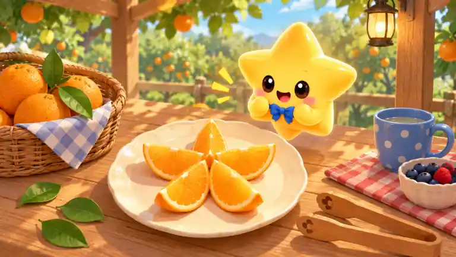
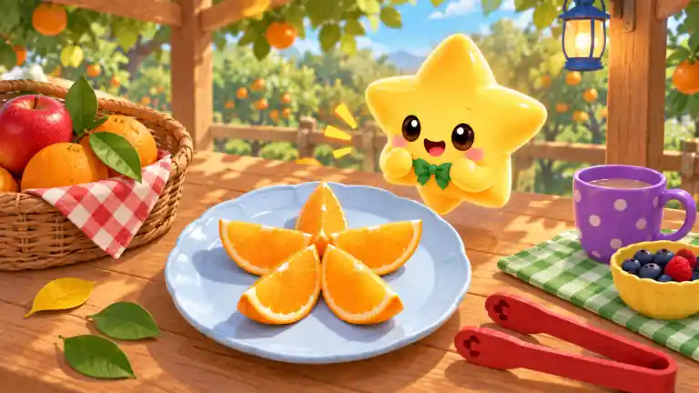
星伴蓝领结变绿 · 奶油色果盘变浅蓝 · 左侧蓝格篮布变红格 · 右侧蓝圆点杯变紫 · 红格餐巾变绿格 · 白莓果碗变黄 · 木夹子变红 · 黑色灯架变蓝 · 桌面最左绿叶变黄 · 篮中最上方橙子变红苹果
high · 单角色配大型多层果盘、七只容器、双杯、餐布、图卡、花瓶和果园背景，细节密集。
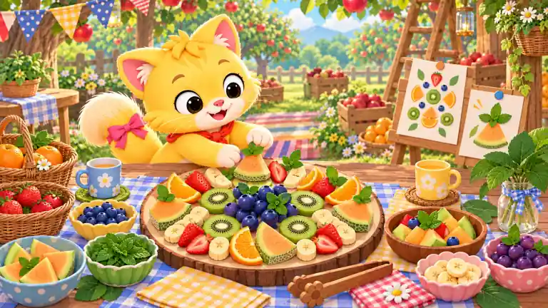
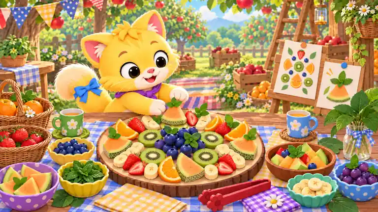
暖暖粉尾结变蓝 · 暖暖红围巾变紫 · 左蓝花杯变绿杯 · 右黄花杯变蓝杯 · 左下蓝圆点瓜碗变紫 · 白薄荷碗变黄色 · 粉香蕉碗变青绿 · 粉葡萄碗变蓝 · 红格餐巾变紫格 · 木夹子变红
low · 双角色与两只果盘为核心，仅配闭合篮、双杯、餐巾和三片落叶，留白充分。
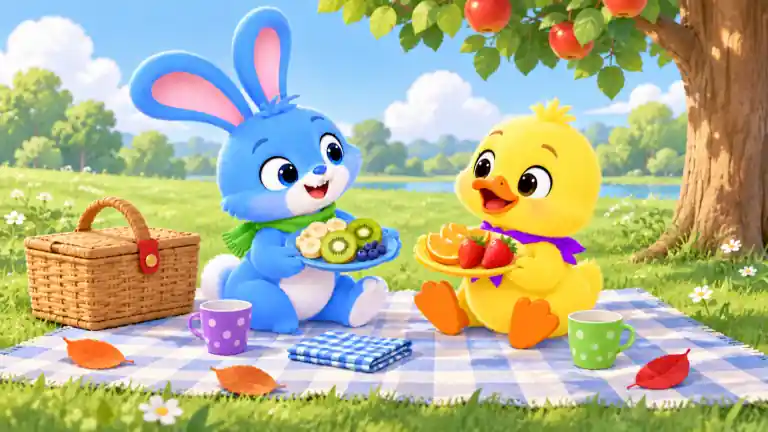
跃跃橙围巾变绿 · 点点蓝围巾变紫 · 跃跃白果盘变蓝 · 点点白果盘变黄 · 野餐篮棕扣变红 · 左侧浅蓝杯变紫 · 右侧黄杯变绿 · 红格餐巾变蓝格 · 左下黄落叶变橙 · 右下绿落叶变红
medium · 双角色、双坐垫与低桌居中，果篮、毯子、花盆、杯盘、灯笼和棚架形成适中层次。
暖暖红围巾变紫 · 暖暖粉尾结变蓝 · 团团绿围巾变蓝 · 暖暖蓝坐垫变黄 · 团团红格坐垫变绿格 · 粉空盘变紫 · 蓝空盘变橙 · 黄花杯变绿 · 蓝星杯变红 · 灯笼黄花图案变黄星
high · 单角色但画本、实物梨、蜡笔盒、颜料、卷笔刀、印章、样画、画架、花盆和果园层次丰富。
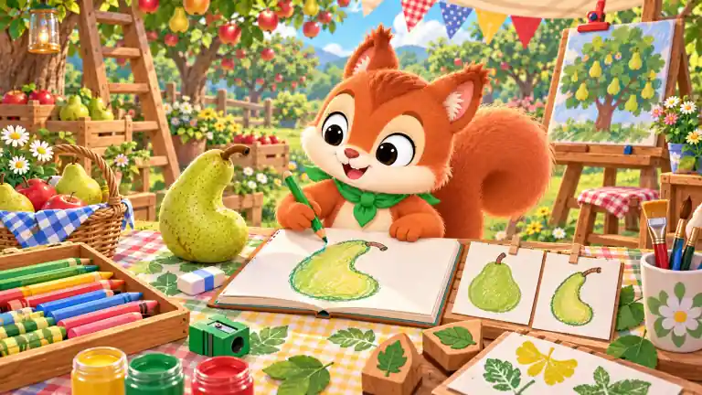
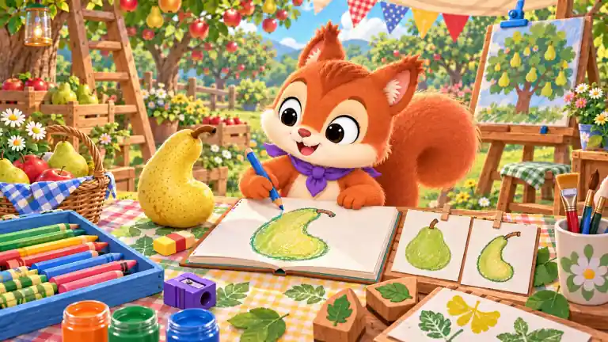
栗栗绿围巾变紫 · 手中绿铅笔变蓝 · 实物绿梨变黄梨 · 蓝白橡皮变红黄 · 木蜡笔盒变蓝 · 绿卷笔刀变紫 · 黄色颜料罐变橙 · 红色颜料罐变蓝 · 右侧红格凳布变绿格 · 画架顶红夹子变蓝
medium · 双角色与图卡板、推车为大主体，但多类果树、旗帜、篮筐、箱子、图标牌和花盆让实际密度达到中档。
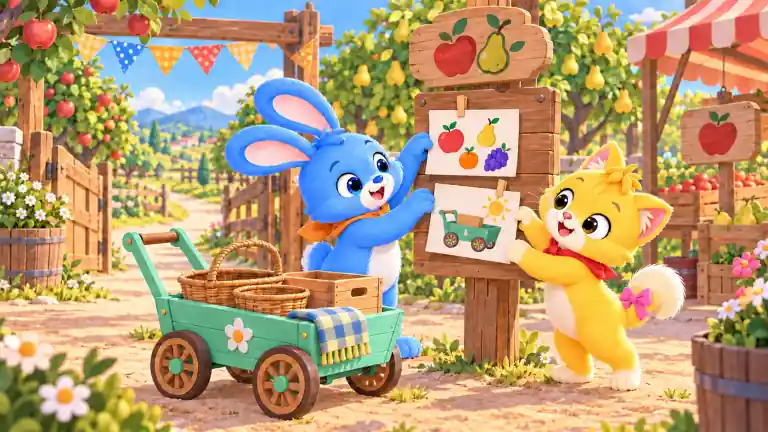
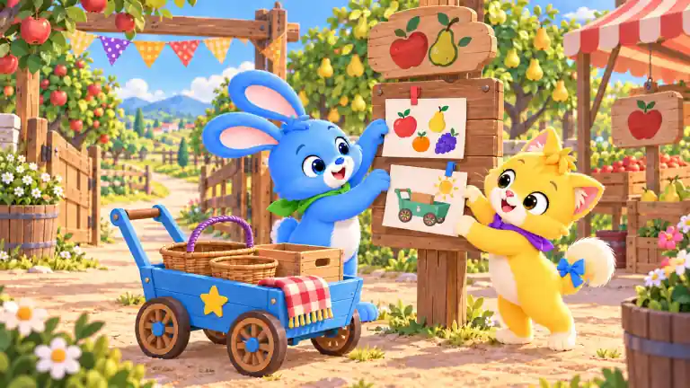
跃跃橙围巾变绿 · 暖暖红围巾变紫 · 暖暖粉尾结变蓝 · 青绿推车变蓝 · 车侧白花变黄星 · 车上蓝黄格布变红格 · 左侧大篮提手变紫 · 水果图卡木夹变红 · 小车图卡木夹变蓝 · 最左蓝圆点三角旗变紫圆点